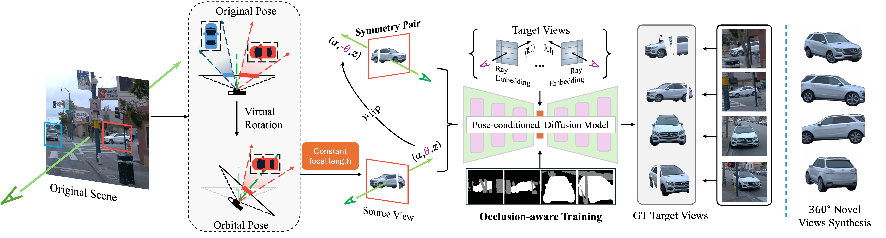

Abstract
The recent advent of large-scale 3D data, e.g. Objaverse, has led to impressive progress in training pose- conditioned diffusion models for novel view synthesis. However, due to the synthetic nature of such 3D data, their performance drops significantly when applied to real-world images. This paper consolidates a set of good practices to finetune large pretrained models for a real-world task – harvesting vehicle assets for autonomous driving applications. To this end, we delve into the discrepancies between the synthetic data and real driving data, then develop several strategies to account for them properly. Specifically, we start with a virtual camera rotation of real images to ensure geometric alignment with synthetic data and consistency with the pose manifold defined by pretrained models. We also identify important design choices in object-centric data curation to account for varying object distances in real driving scenes – learn across varying object scales with fixed camera focal length. Further, we perform occlusion-aware training in latent spaces to account for ubiquitous occlusions in real data, and handle large viewpoint changes by leveraging a symmetric prior. Our insights lead to effective finetuning that results in a 68.8% reduction in FID for novel view synthesis over prior arts.
Pipeline
The overall pipeline of Drive-1-to-3. First, it processes a single vehicle image from on-board cameras, virtually rotating it to a shared orbital pose. The object-centric image cropped with a constant focal length is fed to a pose-conditioned diffusion model, which performs occlusion-aware training in latent space with a symmetric prior.
Novel View Synthesis
- Geometrically Consistent: Project real camera poses into object-centric orbital camera poses.
- Constant Focal Length: Handle large variations in camera-to-object distances in real data.
- Occlusion-aware Training: Convert the occlusion mask to the latent space.
- Viewpoint Change: Enlarge the pose variations in training data by leveraging a left-right symmetric prior for vehicle categories.
Comparisons between the pretrained Free3D and ours on real vehicle images, demonstrating our large performance gain.

3D Reconstruction with LGM

Application for Object Insertion
We demonstrate the application in virtual object insertion, by integrating the 3D object model from Drive-1-to-3+LGM output into Unisim, a NeRF simulator for dynamic driving scenes.
More Results
Challenging cases: results on night-time condition, unusual vehicle, and strong surface reflection; Cross-dataset generalization: results on the low-resolution NuScenes images and high-resolution DVM-Car images.
BibTeX
@article{lin2024drive1to3enrichingdiffusionpriors,
title={Drive-1-to-3: Enriching Diffusion Priors for Novel View Synthesis of Real Vehicles},
author={Chuang Lin and Bingbing Zhuang and Shanlin Sun and Ziyu Jiang and Jianfei Cai and Manmohan Chandraker},
year={2024},
url={https://arxiv.org/abs/2412.14494},
}